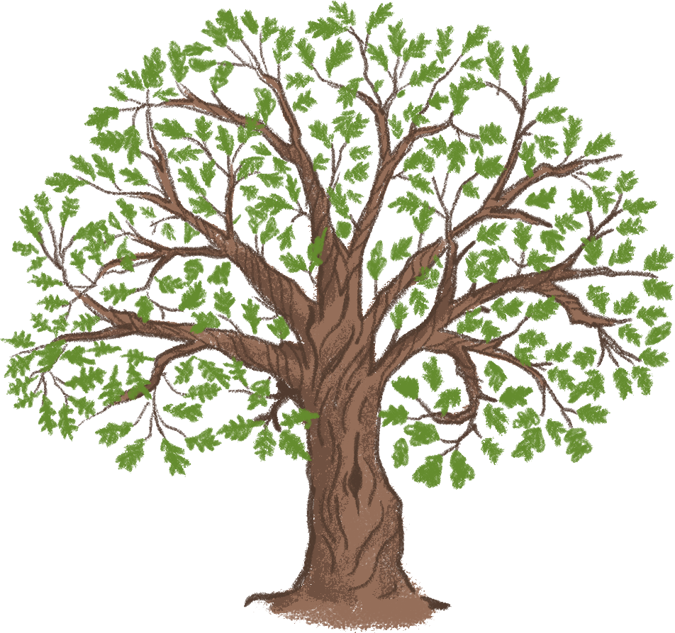
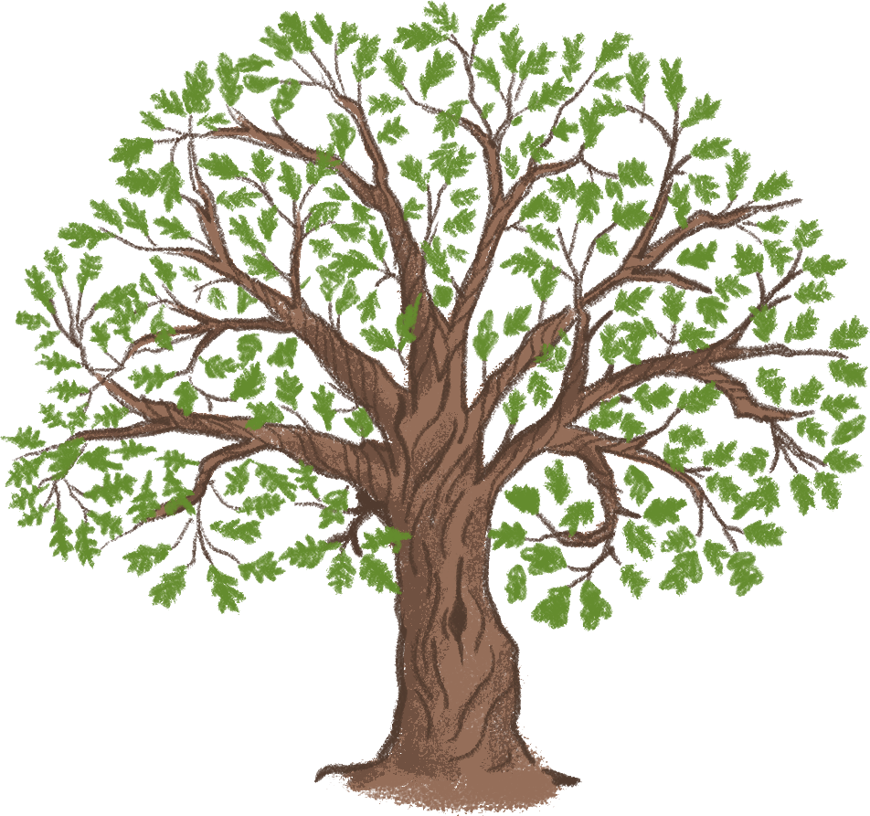

Главными чертами
славянского
язычества считаются
одухотворение
природы, культы
предков и
сверхъестественных
сил.


Они почитают реки,
нимф, и другие
божества, приносят
жертвы всем им и при
помощи этих жертв
производят
гадания.


Род

Создатель мира
Род – это древнейший архетип единого
и
бессмертного пространства и времени
Творца, создавшего весь
обитаемый мир,
от земли до звёзд.
 


Боги, созданные им,
враждовали между собой, и
Род разделил мир на 3 части: Явь,
Правь и
Навь. В Яви жили боги
стихий и обычные люди, в Нави -
темные боги, а
в Прави - светлые.
Род посадил мировое дерево,
которое кроной своей
обуял
вышний мир, стволом своим
пронзил мир земной, а
корнями
ушел глубоко в
мир подземный.

Славяне считали, что Род
изначально находился внутри
Мирового Яйца - некоей
пространственно-временной
единице, лежащей за
пределами бытия.


Бог огня и кузнечества,
отец остальных богов
Первый сын Рода, довершивший его творение.

Сварог
Следит и связывает
между собой
элементы мироздания.
Являет мужской лик
Рода.
Он даровал огонь людям, чтобы
люди
могли спастись от холода и голода,
ярмо и плуг для пахоты и боевое
оружие для защиты.
Лада
Её дети
покровительствуют разным
проявлениям любви: Лель
- пылкой,
Леля - юной, Полель - зрелой
Женская ипостась Рода, его дочь и
жена Сварога.
Сварог скрепил мир
железной цепью, а Лада “сладила” его
любовью, вдохнула в мир гармонию.

Богиня красоты, любви,
весны и брака

Покровительница
и защитница
младенцев и браков
В русском языке есть множество
слов с корнем “лад”, и
все они связаны
с установлением порядка, ощущением
полной гармонии внутреннего
и внешнего

Покровительствует
всему юному: первым
росткам, детям, юной
женственности и
первой юношеской
влюбленности
Леля

Богиня весны,
лета и юности
Первая дочь Лады, рожаница,
богиня красоты и весенне-летнего
плодородия.
Ей характерен весёлый и игривый
нрав. Можно сказать, что она одна
из самых любимых богинь славян.
Она заботливая, нежная, любящая
и всегда готовая прийти на помощь.
Белобог

Бог удачи
и счастья

Белобог является воплощением
светлых человеческих идеалов:
добра, чести и справедливости.
Он
олицетворял весеннее небо
и свет - то, что несёт людям
радость и жизнь.
Также он
покровительствует тем, кто
с помощью науки или
магических практик
стремится к более широкому
познанию мира, в частности
к постижению тайных,
сакральных знаний
Эти боги
неразрывно связаны,
как добро и зло, как Инь и Янь
Чернобог

Бог холода, смерти,
зла и безумия

Существовать они могли
только до тех пор, пока
продолжалась борьба
между ними, поэтому
победу так никто и не
одержал
Чернобог - некая чёрная
сущность, враг
светлых богов и повелитель загробного
мира, подземного царства и пекла.

От брака Чернобога и богини смерти
Марены родились дочери Желя и Карна -
богини загробного мира, провожающие
и встречающие умерших.
Перун


Бог-громовержец,
покровитель дружины
Живой мир находился под
управлением Перуна. Он
покровительствовал смертным,
управлял небом и землей.
Перун был верховным
божеством древних славян, он
был хранителем законов, олицетворял
силу и мощь,
даровал хороший урожай, покровительствовал царской
власти и воинам


Велесу помогает его
воинство, Велесичи -
домовые, банники,
лешие, полевики,
полудницы.
Велес

Бог скота, богатства,
мудрости и магии
«скотий бог»,
олицетворение
хозяйской мудрости.
Также покровительствует
деятелям
искусства. Упоминается, как
проводник в царство мертвых.
Будучи покровителем
обычных людей, часто
противопоставляется Перуну –
богу княжеской дружины
Люди чтили его как своего защитника
и покровителя всей людской жизни
Хорс

Бог солнца
и порядка
Ему приходилось бороться с
действиями Чернобога, чтобы
Земля зимой не стала
замерзшей безжизненной
планетой. В связи с этим
в культуре персонаж
отождествлялся с надеждой
на скорое тепло, наступление
весны и хороший урожай.
Хорс считался заботливым помощником
земледельцев. От имени бога пошли слова,
однокоренные с «хорошо».


Хорс отвечает за
движение и развитие
всего мира:
движение
звезд и планет, смену
дня и ночи, времен года
Даждьбог

Бог света и
живительной силы
Он дарует
людям дождь, свет
и тепло, замыкает
зиму и отмыкает
лето.

Дажьбог
покровительствует
свадьбам, и
встречает жениха
на рассвете в день
бракосочетания.
Он ездит по небу в колеснице, запряженной
четверкой белых огнегривых коней с золотыми
крыльями, а солнечный свет
происходит от
огненного щита, который Даждьбог возит с собой.
Даждьбог, будучи Богом-подателем,
считается покровителем сирот, странников,
нуждающихся, страждущих и
других людей,
которым нужна помощь в жизни.

Стрибог

Бог воздушной
стихии
Он может управлять погодой,
однако если сравнить его
с богом Перуном, в гораздо
больших масштабах.
Стрибог повелевает
всем, что имеет
отношение к воздуху.
Это не только ветер,
но и птицы, воздушные
элементали и даже
луки и стрелы.
В славянских
легендах Стрибог
обитает на краю света
и почти не общается с сородичами.
Мокошь

Женское божество судьбы,
плодородия и домохозяйства

Мокошь была одной из центральных
фигур языческой веры древних славян.
Она олицетворяла женское
начало природы, стихию
земли — Мать сыру землю -
подательницу земного
изобилия.
Подобно мойрам
в греческой мифологии,
Мокошь пряла судьбы людей
и
покровительствовала
рукодельницам.

Один из семерых богов,
чьи идолы воздвиг
Владимир, однако
сведения о нем еще более
скудные, чем об остальных
богах пантеона, так что
фигура бога весьма
спорная.
Семаргл

Бог огня, вестник между
небесным и земным мирами
По одной из легенд огненный бог самым
первым появился на свет из
«божественной искры», которую Сварог
Его функции не до конца
известны, но считается, что
он покровительствует
огню, семенам и охраняет
мировое древо, защищает
мир людей от зла.
Дивия

Богиня луны,
сестра Хорса
Дивия была сотворена, чтобы люди во
мраке ночи смогли увидеть свет во
тьме, символе заблуждений и иллюзий.
Когда её колесница полностью
проезжает по небосклону, колесница
Хорса начинает свой ход.

Дивия связана
с началом новой жизни,
с беременностью
и материнством;
богиня контролирует
и охраняет подсознание
и сны